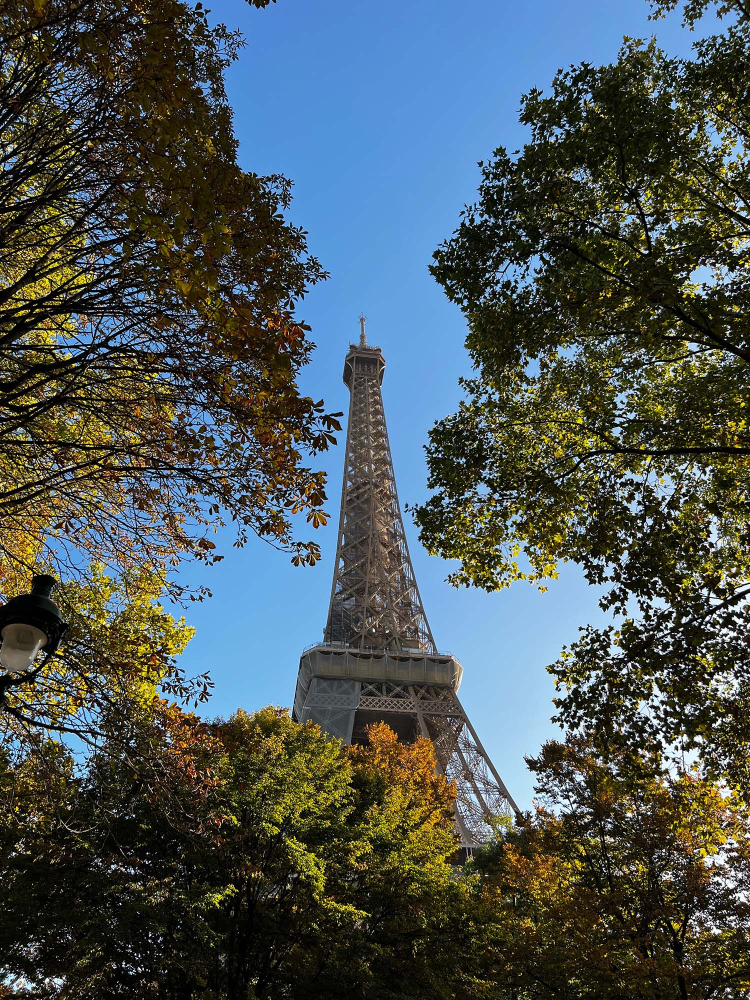
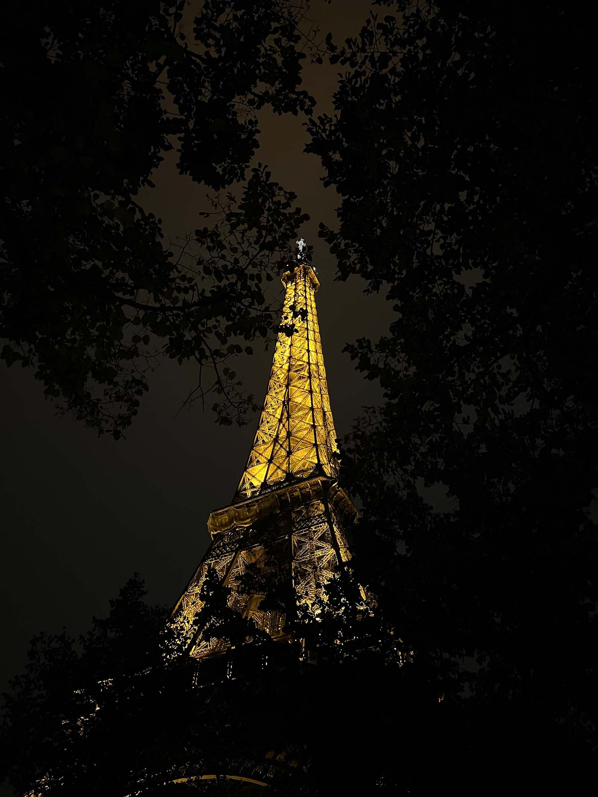
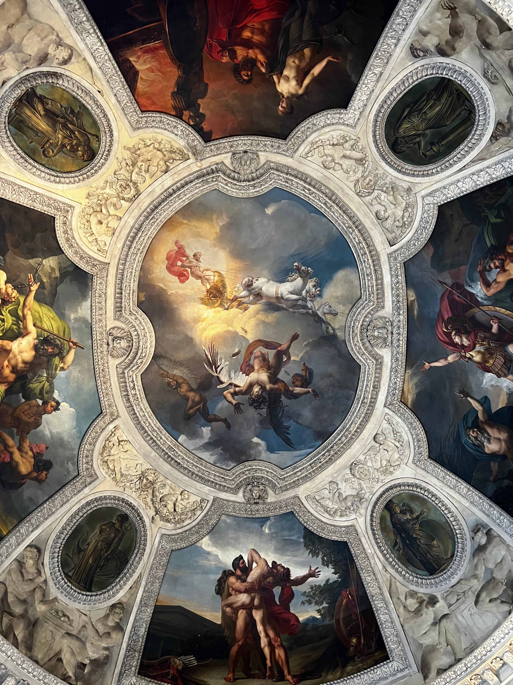
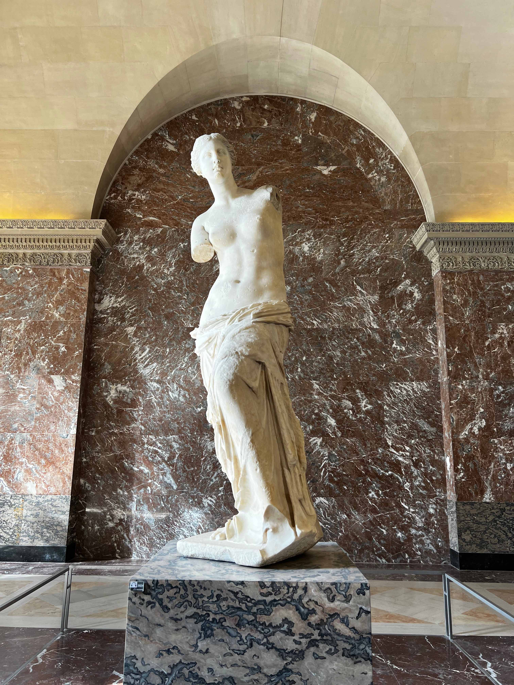
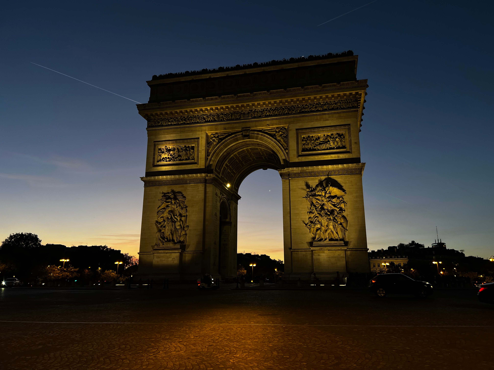
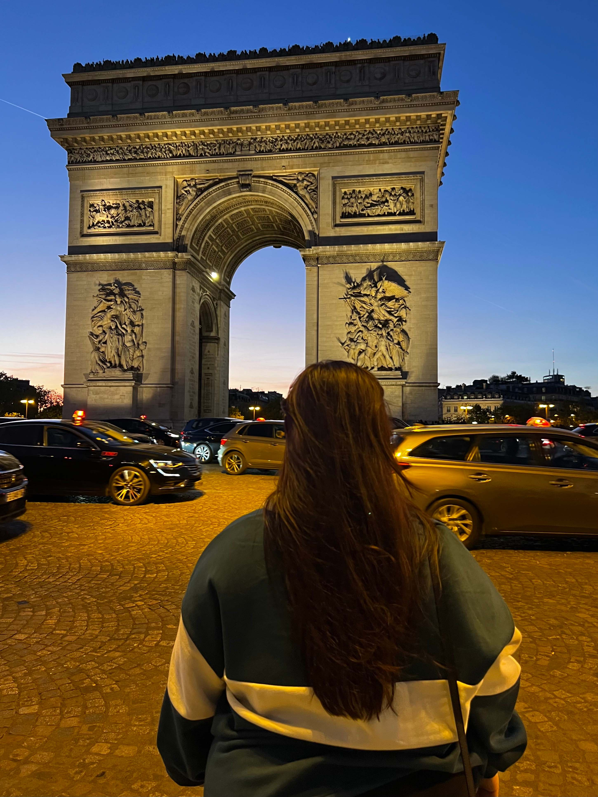
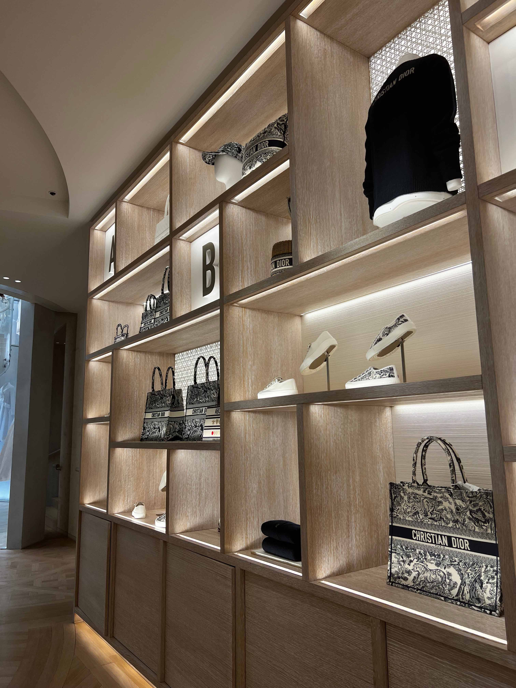
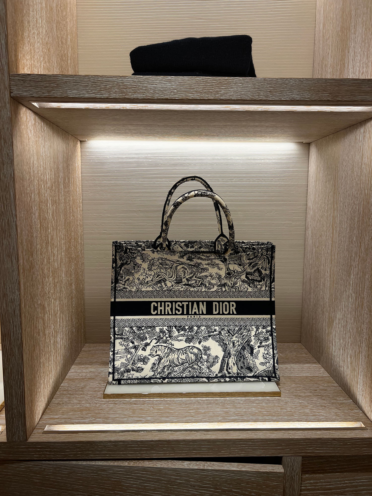
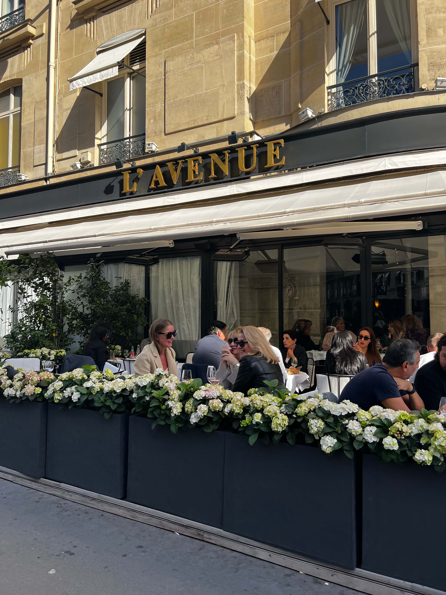
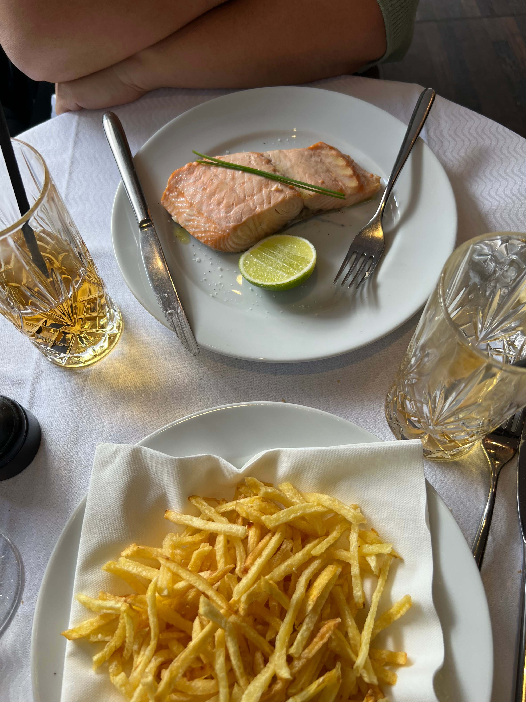

The capital of france is all about romance, art and culture. It owns iconic landmarks like the Eiffel Tower and the Louvre Museum. It's also known for its cute cafe's, and beautiful streets. When I turned 18 years old my mom took me to Paris for the first time in my life, this trip was amazing And meant alot to me.
The Eiffel Tower


The iconic symbol of Paris and France, an architectural brilliance. The Eiffel Tower was designed by enigineer Gustave Eiffel. Thats where the name Eiffel Tower comes from. It was construccted for the 1889 world's fair. The tower is 324 meters long (1,063 feet) and has held the titel of the world's tallest structure for over 40 years. When we went to the Eiffel Tower we went up the tower with elevators, there were a lot of people on the tower itself. The view was amzing, you could also see alot of greenery. The tower is surrounded by greenery. When I was up there I kept thinking how amazing would the view be at night when all the lights are on. We went to the highest part of the tower. On one of the floors there was a whole restaurant, swings, cafe's etc. Before I went on the tower I couldn't imagine that all of that could be up there. There were also souvenir stores.
The Louvre Museum
The Louvre museum is one of the best art museums. The museum was originally a royal palace, which was transformed in a public museum in 1793. The museum has a very big diverse collection of artworks, including ancient artifacts, sculptures, paintings etc. Some very known and popular pieces are the Mona Lisa by Leonardo Da Vinci, the Venus de Milo etc. My experience in the Louvre was amazing. Me and my mom went there for almost 10 hours which is crazy to me. A good tip is to buy your tickets before hand! The lines were so long but we had prepaid tickets, with an audio system. We got our nintendo ds's and walked around the museum. I've been to many museums before, but I can confidently say that this one had the most beautiful artworks I have seen in my life. They had art from so many countries, from golden rooms to the Mona Lisa, dutch art, persian art. Some pieces were so big we wondered how they got it in there. In paris i took a total of 2.166 pictures and videos, most of them were probably from the Louvre. I recommend this museum to anyone, you have to see this atleast once in your life!


Arc de Thriomphe
This was my favorite outdoor landmark of paris, the Arc de Thriomphe which stands for Triumphal Arc. This monument is iconic, located at Champs-élysées. Champs-élysées is one of the city's most famous avenues, which I will talk about in the next paragraph. The Arc de Thriomphe was designed to commemorate France's military triumphs and honor those who fought and died for the country. It was completed in 1836. The monument has a neoclassical designed that has been influenced by Roman Architecture's. It has alot of detail to it. Around the Arch there is a roundabout which is crazy busy, and not safe I dont even know how it is legal. A fun fact about the arch is that the names of french victories and generals are inscribed on its surfaces. Visitors can climb to the top of the Arc for amazing views of Paris, I have seen that the view is the best one in Paris. You can even see the Eiffel Tower and the Louvre. I remember us being to tired to go up there, because there were a lot of stairs. I will definitly do it next time!
There are many more spots in Paris that have pretty views etc. Paris is very big, but public transport will help you get anywhere. Everything is pretty close to eachoter! I recommend going to places like the Eiffel Tower and the Arc de Thriomphe twice. I went to both of them during the day and at night. On the first night we arrived pretty late, but still went to the Eiffel tower. It was during october of 2022 so the leaves were falling as we were walking to the Eiffel tower. It was a magical moment, and a lifelong memory.


Champs-élysées
The Champs-élysées is one of the most famous avenues in the world. Stretching about 2 Km (1,2 miles). The avenue has many shops, from regular shops to very luxury shops. At the end you can find the Arc de Thriomphe. It is a busy avenue and a must visit when your in paris.


L'Avenue
A spot I recommend to eat at is L'Avenue. L'Avenue is a fashionable restaurant located on Avenue Montaigne. It is known for its popularity among locals, but also celibrities. It owns a very chic and stylish atmosphere. I remember when sitting there everyone was dressed to fancly. Straight out of Paris. It is a very busy spot so you may have to wait a bit to get seated. I recommend making a reservation during peak times. L'Avenue is a celebrity hotspot, and has been in many films and shows. They have a beautiful outdoor terrace, the restaurant is a little smaller on the inside. It is important to note that the restaurant is not very budget friendly, but I would recommend it.
Overall Paris was an amazing trip, and I highly recommend going there! Eventually I went twice in the same year.

